TOTM · identidad compartida
El tótem de tus agentes. · La O en anillo es el "ojo": jade protegido, ámbar alerta.
Versión 1
Esfera
Un objeto, una luz. Tranquilo y doméstico: estado global en una sola banda.
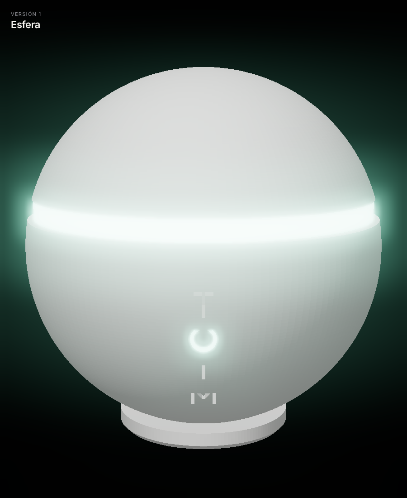
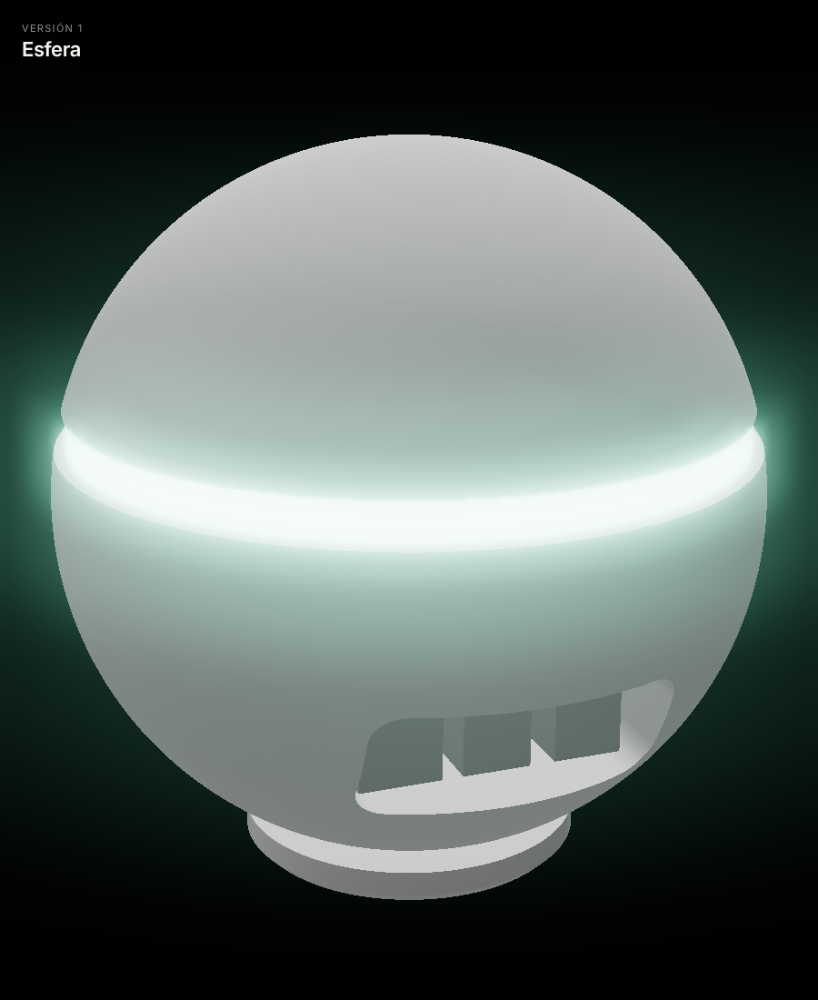
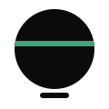
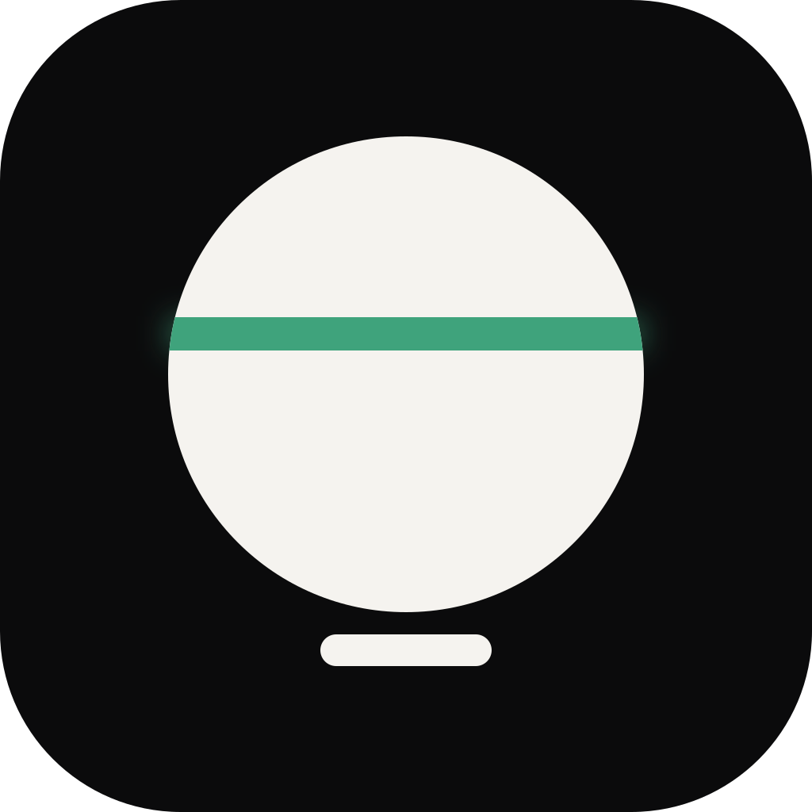
- Ø 140 mm · banda de luz de 8 mm
- Puertos de la Pi 2B visibles atrás (USB-A + Ethernet)
- Riesgo: se parece a HomePod mini / Echo Dot
Versión 2
Tótem
Cuatro segmentos, tres anillos. Cada anillo es una capa de seguridad: la alerta dice dónde.
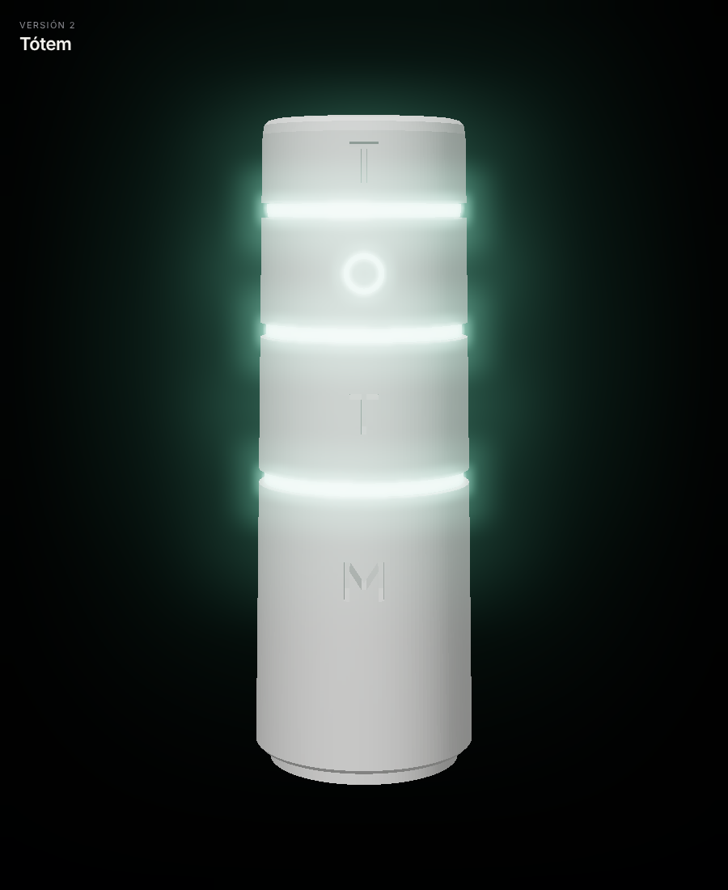
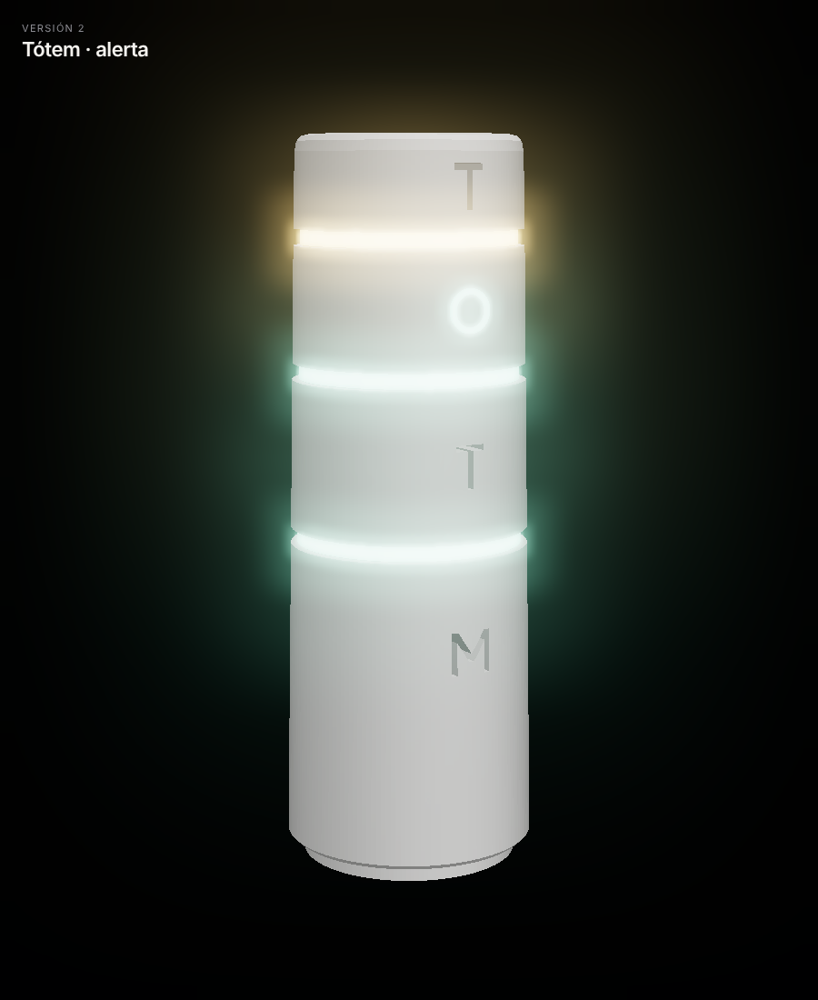
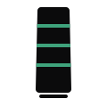
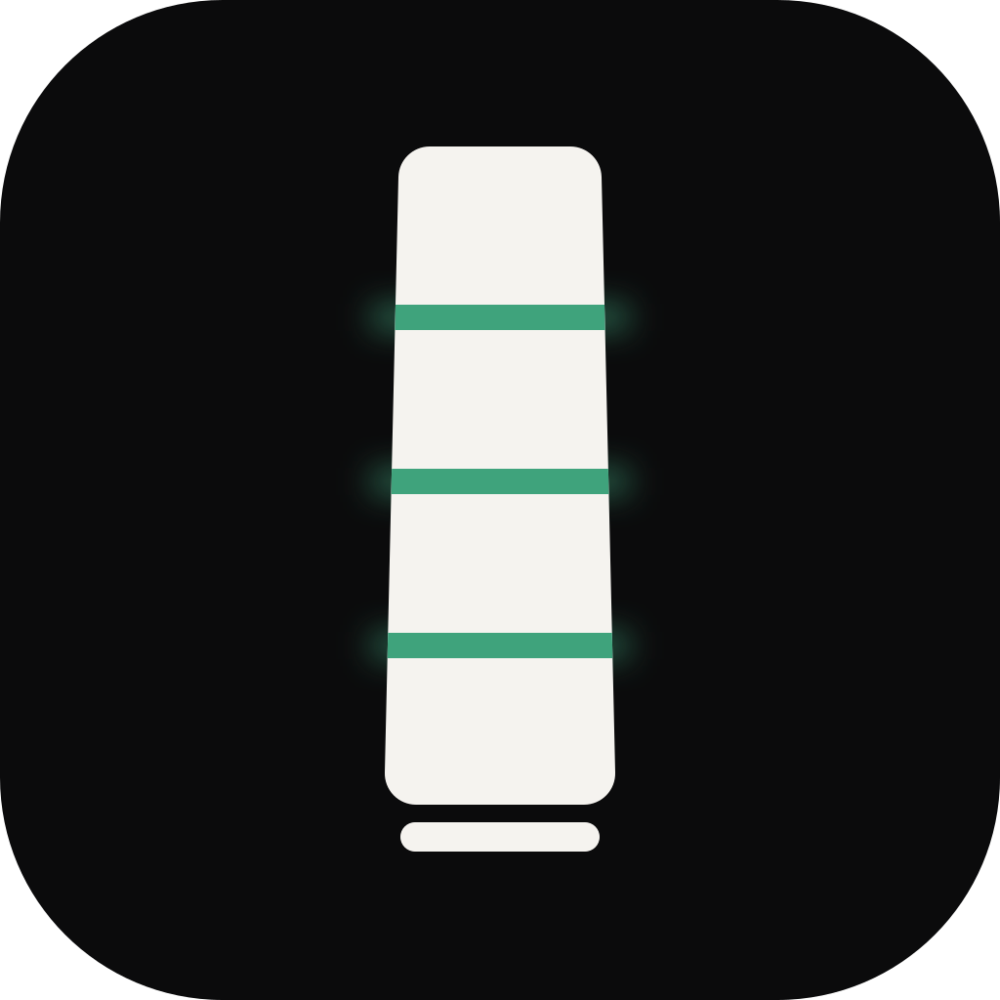
- Ø 76 → 68 mm · 220 mm de alto · una letra por segmento
- Anillos: comandos · red · secretos (de abajo arriba)
- La Pi va parada; los cables salen por debajo
Obsidiana #0B0B0C
Hueso #F5F3EF
Jade #3FA37C
Ámbar #E8A33D